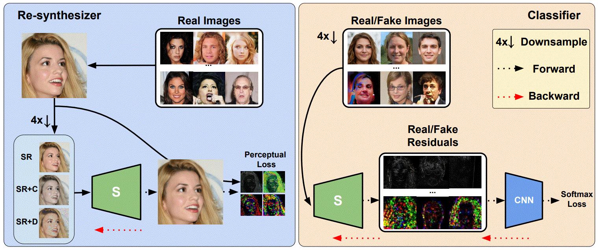

Abstract
The rapid advances in deep generative models over the past years have led to highly realistic media, known as deepfakes, that are commonly indistinguishable from real to human eyes. These advances make assessing the authenticity of visual data increasingly difficult and pose a misinformation threat to the trustworthiness of visual content in general. Although recent work has shown strong detection accuracy of such deepfakes, the success largely relies on identifying frequency artifacts in the generated images, which will not yield a sustainable detection approach as generative models continue evolving and closing the gap to real images. In order to overcome this issue, we propose a novel fake detection that is designed to re-synthesize testing images and extract visual cues for detection. The re-synthesis procedure is flexible, allowing us to incorporate a series of visual tasks - we adopt super-resolution, denoising and colorization as the re-synthesis. We demonstrate the improved effectiveness, cross-GAN generalization, and robustness against perturbations of our approach in a variety of detection scenarios involving multiple generators over CelebA-HQ, FFHQ, and LSUN datasets.Method

The diagram of our detection pipeline. Our end-to-end model has two components. A classifier is trained with real/fake images. We learn a re-synthesizer with real images only to help extracting robust features and isolating fake images. The synthesizer takes different forms of inputs to capture various visual patterns from those tasks for robust representations, including super-resolution (SR), colorization (C) and denoising (D).
Citation
@inproceedings{yang_ijcai21,
title={Beyond the Spectrum: Detecting Deepfakes via Re-synthesis},
author={Yang He and Ning Yu and Margret Keuper and Mario Fritz},
booktitle={30th International Joint Conference on Artificial Intelligence (IJCAI)},
year={2021}
}